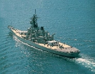
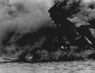
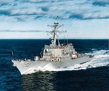

Note: All of these pictures are public domain and found on the net. e.g. I made none of them.
| name | phone | |
| Rasmus Kaj | kaj@it.kth.se | 08 656 92 02 |
| Michael Strömberg | mikaels@it.kth.se | 070 717 2393 |
| vecka | action | comments |
| 25 | realize game engine, begin pseduocode | |
| 26 | code in the game engine, work on graphics & sound | |
| 27 | fine tuning and first phase playtesting | Milestone #1 |
| 28 | learn sockets coding, elementary implementations | |
| 29 | perfect sockets coding, final implementations | |
| 30 | enhance the graphics and sound design | |
| 31 | fine tuning and second stage playtesting | Milestone #2 |